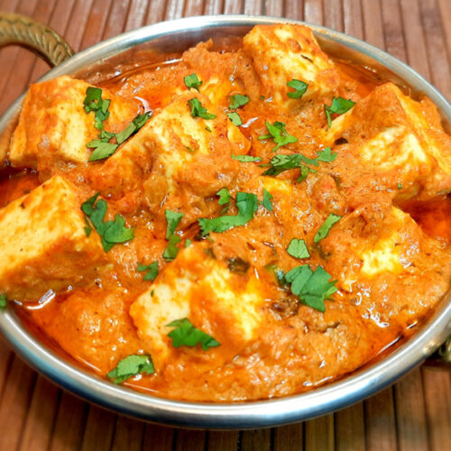

Paneer Butter Masala

Descrition
Paneer Butter Masala is a rich and creamy North Indian curry made with paneer (Indian cottage cheese) simmered in a tomato-based sauce. Infused with aromatic spices, butter, and cream, this dish is known for its luxurious texture and mildly spicy, tangy flavor. Paneer Butter Masala is a popular vegetarian dish that pairs perfectly with naan, roti, or steamed rice, making it a favorite in Indian households and restaurants alike.
Ingredients
- 200g Paneer, cubed
- 2 tbsp Butter
- 1 tbsp Oil
- 1 large Onion, finely chopped
- 2 Tomatoes, pureed
- 1/2 cup Cream
- 1 tbsp Ginger-Garlic paste
- 1/2 tsp Turmeric powder
- 1 tsp Red chili powder
- 1 tsp Garam masala
- 1 tsp Coriander powder
- 1/2 tsp Cumin seeds
- 1 tsp Kasuri Methi (dried fenugreek leaves)
- Salt to taste
- Fresh Coriander leaves, chopped (for garnish)
Instructions
- Heat oil and 1 tbsp butter in a pan. Add cumin seeds and let them splutter.
- Add the finely chopped onions and sauté until golden brown.
- Stir in the ginger-garlic paste and cook for a minute until the raw smell disappears.
- Add the tomato puree, turmeric powder, red chili powder, and coriander powder. Cook the mixture until the oil separates.
- Add the paneer cubes to the pan and cook for 2-3 minutes, gently coating them with the masala.
- Pour in the cream and add salt to taste. Stir well and cook for another 5 minutes on low heat.
- Add garam masala and crushed kasuri methi. Mix well and simmer for another 2 minutes.
- Stir in the remaining butter and garnish with fresh coriander leaves.
- Serve hot with naan, roti, or rice.